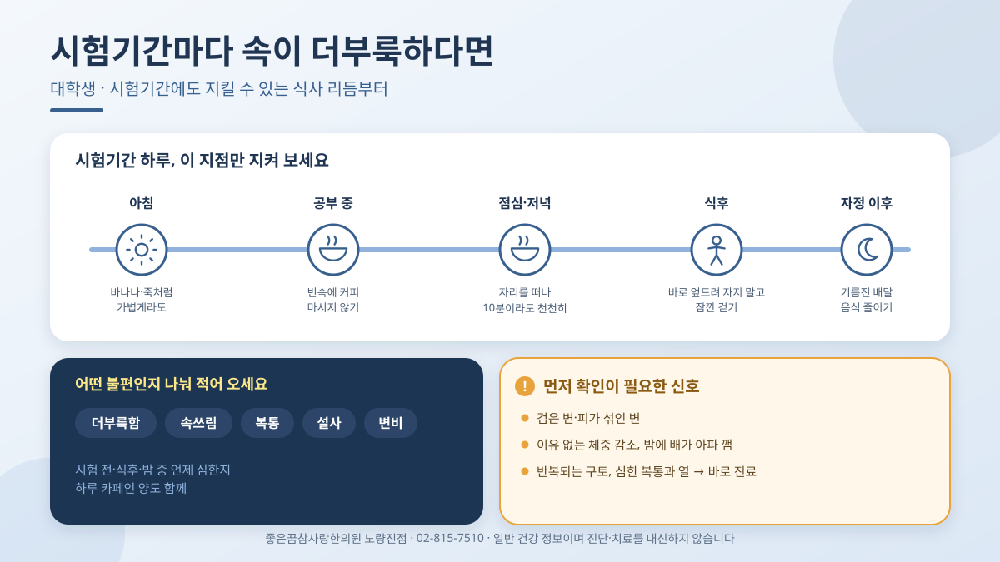
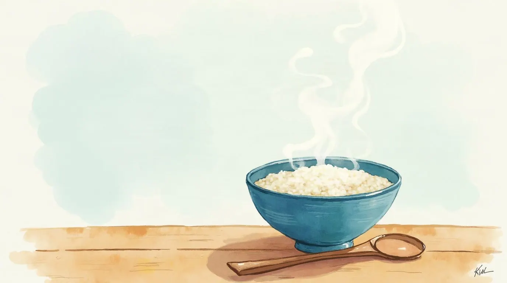
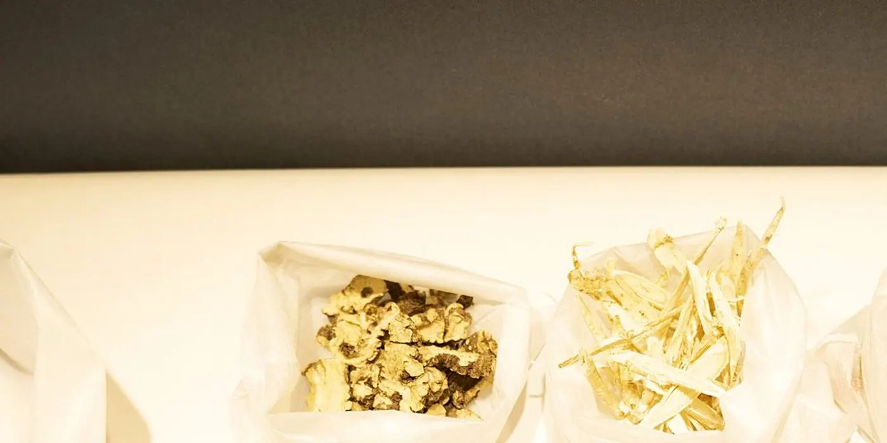

시험 준비로 긴장이 이어지고 식사가 불규칙해지면 속이 더부룩하거나 배가 아픈 일이 잦아질 수 있어, 식사 시간과 메뉴, 긴장하는 시간대, 대변 상태를 먼저 묻고 시험기간에도 지킬 수 있는 식사 리듬을 함께 정리합니다.
여쭙는 것
- 시험기간에는 하루 몇 끼를, 몇 시에 드시나요?
- 더부룩함, 속쓰림, 복통, 설사 중 어떤 것이 가장 불편한가요?
- 시험 당일이나 발표 전처럼 긴장할 때 더 심한가요?
생활에서 해 볼 것
- 아침을 거르지 말고 바나나나 죽처럼 가볍게라도 먹기
- 공부하며 먹기보다 10분이라도 자리를 떠나 천천히 먹기
- 빈속에 커피 마시지 않기
한의원에서 함께 살필 것
- 시험기간마다 소화 불편이 반복되는 경우 식사 리듬과 긴장의 흐름을 함께 살핍니다.
- 잠이 부족하고 두통이 함께 있는 경우 생활 전반을 함께 살핍니다.
- 변비와 설사가 번갈아 나타나는 경우 장의 리듬도 이어서 여쭙니다.
먼저 확인이 필요한 신호
- 검은 변이나 피가 섞인 변을 본 경우
- 체중이 이유 없이 줄거나 밤에 배가 아파 깨는 경우
- 토하기를 반복하거나 배가 심하게 아프고 열이 나는 경우(바로 진료)

시험기간마다 속이 더부룩하고 배가 아프다면, 끼니를 거르지 않고 빈속에 커피를 마시지 않는 것처럼 시험기간에도 지킬 수 있는 식사 리듬부터 잡는 것이 좋습니다. 편의점 음식과 커피, 늦은 밤 배달 음식이 이어지다가 시험 날 아침 배가 살살 아파 화장실을 몇 번씩 들른다는 대학생이 많습니다.
식사 순서를 바꾸면 시험 주간의 속 불편이 한결 덜하다는 분도 있지만, 시험이 끝난 뒤에도 불편이 이어지거나 학기마다 되풀이된다면 한 번 살펴보시는 것이 좋습니다. 검은 변이나 피가 섞인 변, 이유 없는 체중 감소가 함께 있다면 생활 조정보다 내과 확인이 먼저입니다.
왜 이런 불편이 생길 수 있나요
- 긴장하면 위와 장의 움직임이 평소와 달라져 더부룩함이나 복통, 설사로 나타날 수 있습니다. 시험 일정이 정해져 있다면 몇 주 앞서 식사와 잠의 순서를 정해 두는 편이 부담이 적습니다.
- 끼니를 거르다 한꺼번에 먹으면 위에 부담이 커집니다.
- 빈속의 커피와 에너지 음료는 속쓰림을 부를 수 있습니다.
- 밤늦은 기름진 음식은 소화가 덜 된 채 잠들게 해 아침 속을 무겁게 합니다.
- 잠이 부족하면 위와 장의 리듬도 함께 흔들리기 쉽습니다.
- 공부하면서 먹으면 씹는 횟수가 줄고 먹은 양을 알아채기 어려워 과식하기 쉽습니다.
- 하루 종일 앉아 있으면 몸을 덜 움직여 장의 움직임도 느려질 수 있습니다.

먼저 이렇게 여쭙니다
- 시험기간에는 하루 몇 끼를, 몇 시에 드시나요?
- 더부룩함, 속쓰림, 복통, 설사 중 어떤 것이 가장 불편한가요?
- 시험 당일이나 발표 전처럼 긴장할 때 더 심한가요?
- 커피와 에너지 음료는 하루 몇 잔 드시나요?
- 시험기간에 잠은 몇 시간 정도 주무시나요?
- 대변은 며칠에 한 번, 어떤 모양으로 보시나요?
- 다시 오신 분께는 지난번 이후 식사 시각과 속이 불편했던 때가 어땠는지부터 이어서 여쭙니다.
일상에서 먼저 해 볼 수 있는 것
- 아침을 거르지 말고 바나나나 죽처럼 가볍게라도 먹기
- 공부하며 먹기보다 10분이라도 자리를 떠나 천천히 먹기
- 빈속에 커피 마시지 않기
- 자정 이후 기름진 배달 음식 줄이기
- 식후 바로 엎드려 자지 말고 잠깐 걷기
- 시험 2~3주 전부터 식사 시각을 정해 두고, 시험 주간에도 그 시각을 크게 바꾸지 않기
- 커피와 에너지 음료는 하루 잔 수를 정해 두고 오후 늦게는 마시지 않기

상황별 예시
- 예를 들어 시험 주간에 아침을 거르고 빈속에 아이스 커피로 버티는 학생의 경우, 오전 시험 중에 속이 쓰리거나 배가 살살 아파 집중이 흐트러질 수 있습니다. 바나나나 요거트처럼 가볍게라도 먼저 먹고 커피는 그 뒤에 마시는 순서로 바꿔 볼 수 있습니다.
- 예를 들어 도서관에서 밤늦게까지 공부하다 자정 넘어 치킨이나 떡볶이를 시켜 먹는 학생의 경우, 소화가 덜 된 채 잠들어 다음 날 아침 속이 더부룩하고 입맛이 없기 쉽습니다. 야식을 저녁 식사로 앞당기거나, 늦게 먹더라도 양을 줄이고 먹은 뒤 바로 눕지 않는 것부터 함께 정리해 봅니다.
- 예를 들어 발표나 실기 시험 날마다 아침에 화장실을 여러 번 가는 학생의 경우, 긴장이 장의 움직임에 영향을 주는 흐름일 수 있어 식사뿐 아니라 시험 전 잠과 긴장을 함께 살펴봅니다. 시험 날 아침에는 평소 먹던 익숙한 음식을 조금만 먹고 집을 일찍 나서는 방법도 이야기해 봅니다.
스스로 점검해 보세요
- 시험기간에는 아침을 거르는 날이 많다
- 빈속에 커피나 에너지 음료를 마신다
- 책상 앞에서 공부하며 끼니를 해결한다
- 자정 넘어 야식을 먹는 날이 일주일에 사흘이 넘는다
- 시험 당일이나 발표 전에 배가 아프거나 화장실을 자주 간다
- 시험기간에 잠이 5시간이 안 되는 날이 많다
- 시험이 끝난 뒤에도 2주 넘게 속이 더부룩하다
앞의 여섯 가지는 시험기간 식사와 잠의 순서부터 바꿔 볼 신호이고, 마지막 항목에 해당하면 한 번 상담을 받아 보세요.

한의원에서 함께 살필 수 있는 경우
- 시험기간마다 소화 불편이 반복되는 경우 식사 리듬과 긴장의 흐름을 함께 살핍니다.
- 잠이 부족하고 두통이 함께 있는 경우 생활 전반을 함께 살핍니다.
- 변비와 설사가 번갈아 나타나는 경우 장의 리듬도 이어서 여쭙니다.
좋은꿈참사랑한의원에서는 첫 방문 때 시험 일정과 식사 시각, 커피 양, 긴장이 심해지는 때를 먼저 듣고, 모든 분께 맥부터 짚은 뒤 혀와 배를 살펴 소화 상태를 봅니다. 배를 눌렀을 때 단단하거나 불편한 자리가 있는지, 대변과 잠은 어떤지 함께 확인하고, 검은 변이나 체중 감소처럼 먼저 확인할 신호가 있다면 내과 진료를 먼저 안내합니다. 그 뒤 필요하다고 판단될 때 침이나 한약 상담 등을 정하고, 남은 시험 일정에 맞춰 식사와 잠의 순서를 함께 계획합니다. 다음에 오시면 지난번 정한 식사 순서를 지켜 본 기록을 이어서 보며 방향을 다시 맞춥니다.
얼마나 지켜보고 언제 상담할까요
- 식사 시각과 커피 마시는 순서를 바꾼 뒤 1~2주는 불편한 시간대를 적으며 지켜보세요.
- 시험이 끝나고 2주가 지나도 더부룩함과 복통이 그대로라면 상담을 권합니다.
- 시험기간이 아닐 때도 일주일에 여러 번 배가 아프거나 학기마다 같은 불편이 되풀이된다면, 다음 시험 전에 미리 살펴보세요.
- 토하기를 반복하거나 배가 심하게 아프고 열이 나는 경우, 검은 변이나 피가 섞인 변을 본 경우에는 기다리지 말고 바로 진료를 받으세요.

이렇게 기록해 오시면 상담이 쉬워집니다
- 시험기간의 식사 시각과 메뉴
- 불편한 시간대(시험 전, 식후, 밤)
- 대변 상태의 변화
- 하루 카페인 양
- 시험과 발표 일정, 그 무렵의 잠 시간
이런 증상은 먼저 확인이 필요합니다
- 검은 변이나 피가 섞인 변을 본 경우
- 체중이 이유 없이 줄거나 밤에 배가 아파 깨는 경우
- 토하기를 반복하거나 배가 심하게 아프고 열이 나는 경우(바로 진료)
- 음식을 삼키기 어렵거나 먹은 것이 자꾸 넘어오는 경우
복용 중인 위장약이나 다른 약은 처방한 의사와 상의 없이 줄이거나 끊지 않습니다.

관련 글
- 시험 스트레스로 변비나 속 쓰림이 올 때는 무엇을 살피나요?
- 시험 당일 아침 식사와 카페인은 어떻게 계획하면 되나요?
- 편의점 식사와 컵라면으로 끼니를 때우다 속이 더부룩할 때는?
한눈에 보는 표
| 구분 | 핵심 |
|---|---|
| 여쭙는 것 | 시험기간에는 하루 몇 끼를, 몇 시에 드시나요? 더부룩함, 속쓰림, 복통, 설사 중 어떤 것이 가장 불편한가요? |
| 생활에서 해 볼 것 | 아침을 거르지 말고 바나나나 죽처럼 가볍게라도 먹기 공부하며 먹기보다 10분이라도 자리를 떠나 천천히 먹기 |
| 한의원에서 함께 살필 것 | 시험기간마다 소화 불편이 반복되는 경우 식사 리듬과 긴장의 흐름을 함께 살핍니다. 잠이 부족하고 두통이 함께 있는 경우 생활 전반을 함께 살핍니다. |
| 먼저 확인이 필요한 신호 | 검은 변이나 피가 섞인 변을 본 경우 체중이 이유 없이 줄거나 밤에 배가 아파 깨는 경우 |
자주 묻는 질문
시험 끝나면 저절로 좋아지나요?
시험이 끝나면 나아지는 경우도 많지만, 학기마다 반복된다면 미리 리듬을 잡아 두는 것이 좋습니다.
소화제를 자주 먹어도 되나요?
가끔은 도움이 될 수 있지만 자주 필요하다면 원인을 함께 살펴보는 것이 좋습니다. 드시는 약은 진료 때 알려 주세요.
시험 당일 아침에는 무엇을 먹으면 좋을까요?
평소 먹어 본 익숙한 음식을 가볍게 드시는 편이 부담이 적습니다. 새로운 음식이나 기름진 메뉴는 피하는 것을 권합니다.
시험 전날 저녁은 어떻게 먹으면 좋을까요?
평소보다 조금 이른 시간에 익숙한 음식을 적당히 드시고, 기름지거나 매운 메뉴는 피하는 편이 부담이 적습니다.
시험기간에 커피를 아예 끊어야 하나요?
끊기보다 빈속에 마시지 않고, 하루 잔 수와 마지막 시각을 정해 두는 것부터 해 보세요. 속쓰림이 잦다면 진료 때 함께 조절해 봅니다.
시험 주간에도 진료를 받을 수 있나요?
평일은 09:30~20:00(점심 13:00~14:00), 토·일·공휴일은 09:30~15:00에 진료하니 시험 일정 사이에 오셔도 됩니다. 남은 시험 일정을 말씀해 주시면 그에 맞춰 식사 계획을 함께 세웁니다.
이 글은 일반적인 건강 정보이며 개인의 진단이나 치료를 대신하지 않습니다. 증상이 있거나 복용 중인 약이 있다면 진료를 통해 확인하세요. 치료 효과는 개인마다 다를 수 있습니다.
작성 기준: 일반적으로 알려져 있는 건강 정보를 참고해 정리했습니다(대표원장 감수). 증상 기록은 1~2주 동안 하루 1회, 비슷한 시간에 적어 오시면 지난 상태와 비교하기 쉽습니다.
좋은꿈참사랑한의원은 재진 때 지난번 이야기부터 이어서 여쭙니다. 진료시간과 예약은 오시는 길에서 확인하세요.
어디서 상담받을 수 있나요?
좋은꿈참사랑한의원은 서울 동작구 만양로2길 2 신성빌딩 3층·5층(서울 동작구 상도동, 7호선 상도역 3번 출구 근처)에 있습니다. 한의사 3명(이종호 대표원장, 조영기 수석진료원장, 정원영 진료원장)이 진료합니다. 진료시간은 평일 09:30~20:00(점심 13:00~14:00), 토·일·공휴일 09:30~15:00이며, 방문 전 전화로 확인을 권합니다. 예약은 네이버 예약, 카카오톡 상담, 전화 02-815-7510로 받습니다.